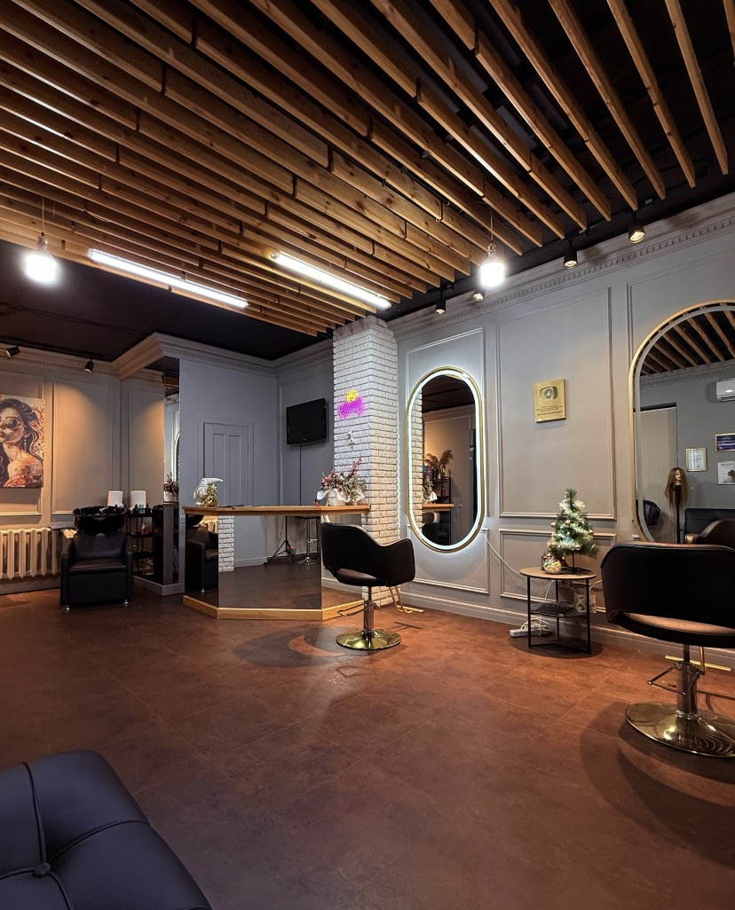

Когда другие говорят «сложно» — мы ищем решение.
The Hair Queen — студия капсульного наращивания волос, где берутся за нестандартные задачи: перекрытие чёлки, работа с короткими и редкими волосами и индивидуальный подбор схемы наращивания.
Записаться в WhatsAppInstagram ↗
Специализация на сложных задачах
The Hair Queen — студия в Астане для тех, кому нужен индивидуальный подход к наращиванию. Мы рассматриваем сложные случаи, за которые не каждый мастер готов взяться: в том числе перекрытие чёлки, работу с короткими и редкими волосами и подбор решения под особенности конкретного клиента.
В работе используем только натуральные волосы. Особое внимание уделяем грамотной расстановке капсул, чтобы не создавать лишнего утяжеления и дискомфорта. Возможность и безопасность процедуры оцениваются индивидуально на предварительной консультации.
Что важно в нашей работе
Сложные работы
Перекрытие чёлки, короткие волосы, редкие волосы и нестандартные зоны — после оценки исходной ситуации.
Только натуральные волосы
Для наращивания используем натуральные волосы. Подбор оттенка и параметров обсуждается индивидуально.
Продуманная расстановка
Распределяем капсулы с учётом особенностей волос, стремясь избежать лишнего веса и неприятных ощущений.
Особые ситуации требуют особого внимания
К нам обращаются девушки, в том числе после алопеции или химиотерапии. В таких случаях особенно важно сначала обсудить состояние кожи головы и волос и получить разрешение лечащего врача. Наращивание не является лечением и подходит не каждому; мастер оценивает возможность процедуры только индивидуально, без обещания результата до консультации.
Обсудить ситуацию конфиденциальноСалон, где начинается ваш новый образ
Уютное пространство студии в Астане для индивидуальной консультации и работы с волосами.
Фотография интерьера предоставлена салоном The Hair Queen.
Цена после уточнения деталей
Стоимость рассчитывается индивидуально с учётом длины, объёма, сложности задачи и выбранной техники.
Узнать стоимостьЗапись на консультацию
Астана, ул. Алихана Бокейхана, 10
WhatsApp: +7 705 456 91 70